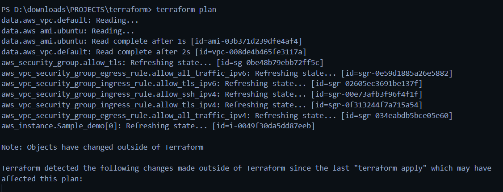
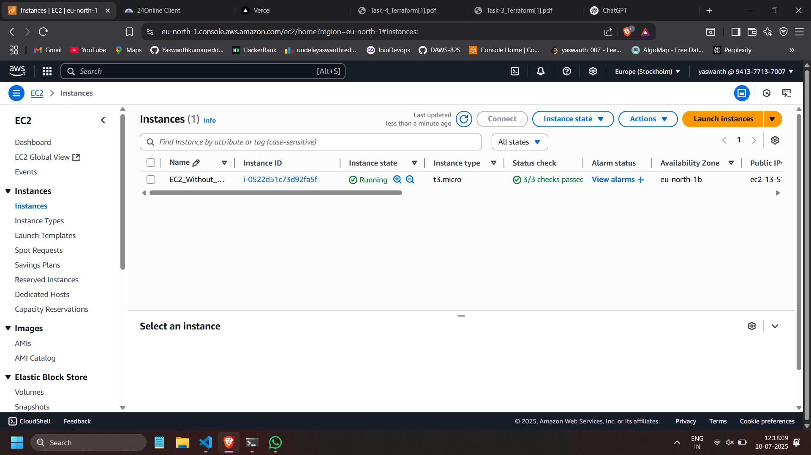
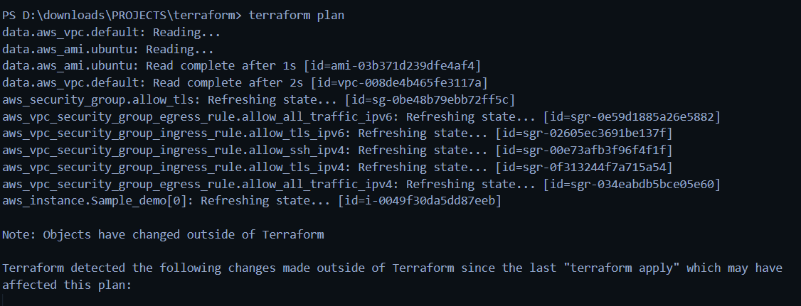
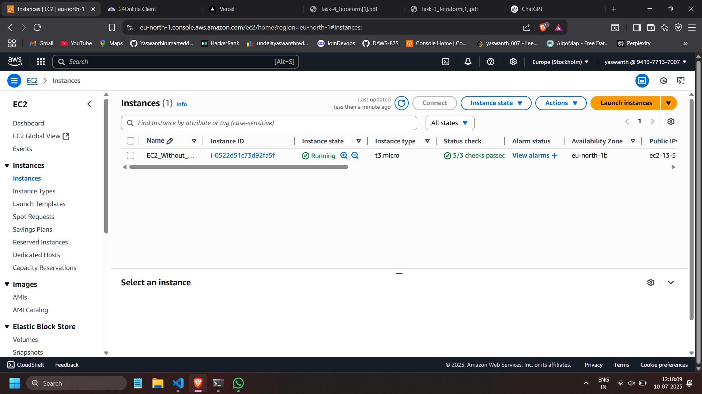
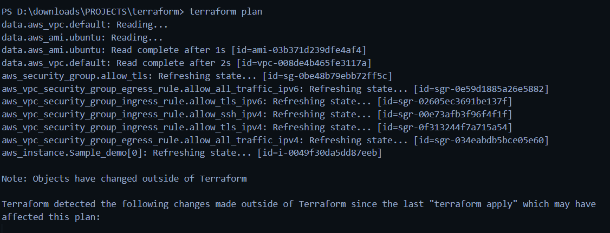
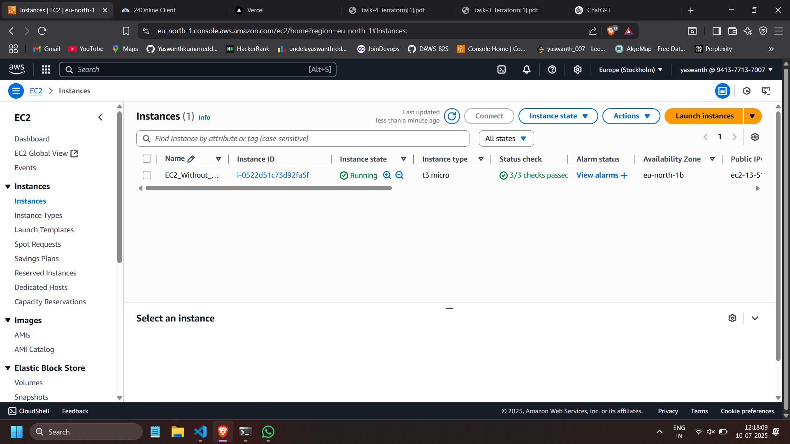
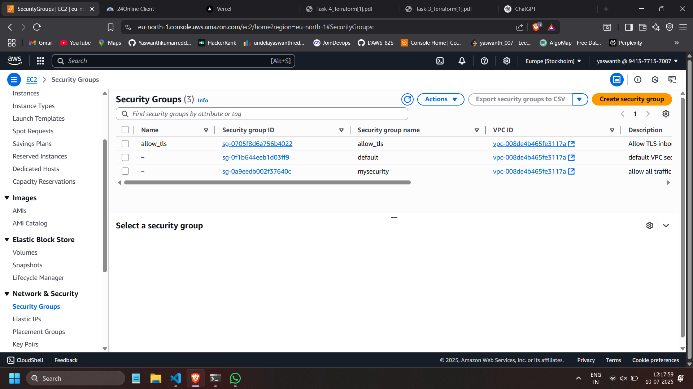
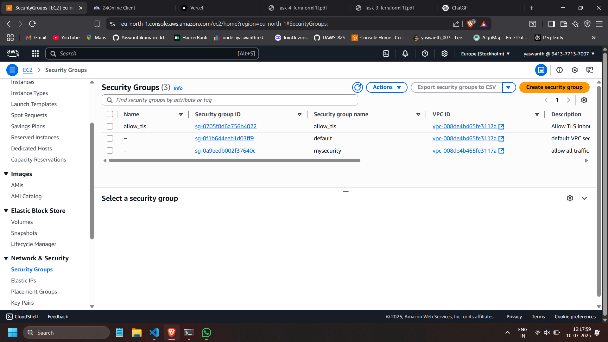

Welcome to my AWS infrastructure automation showcase! This platform documents my hands-on work with Terraform to provision and manage multiple AWS services, including EC2, Lambda, S3, RDS, Athena, CloudTrail, and more — all within a unified, codified infrastructure-as-code workflow.
Explore the various AWS infrastructure tasks I've completed, each with detailed Terraform implementation notes and results. This system is designed to provide clear insights into infrastructure automation, service orchestration, and real-world cloud provisioning practices.
01
Basic EC2 Deployment
Installed Terraform and launched a t2.micro EC2 instance using Amazon Linux 2 via Terraform.
Completed
02
Secure Ubuntu EC2 with SSH/HTTPS
Provisioned an Ubuntu EC2 instance with SSH & HTTPS access using default VPC and custom security groups.
Completed
03
Multi-Service AWS Infrastructure
Automated deployment of EC2, VPC, Lambda, S3, RDS, CloudWatch, Athena, and more using Terraform.
Completed
04
Static S3 Website & EC2 Dev Server
Hosted a static site on S3 and launched a Python-ready EC2 dev server using user data scripts.
Completed
About Me
üßë‚Äçüíª
Undela Yaswanth Kumar Reddy
Cloud & DevOps Enthusiast
Infrastructure as Code Practitioner
AWS Automation Specialist
Professional Background
I'm passionate about cloud infrastructure and automation, with hands-on experience deploying and managing AWS services using Terraform. My recent work includes automating the provisioning of EC2, Lambda, S3, RDS, Athena, CloudTrail, and more in a unified IaC workflow.
Technical Skills
AWS (EC2, Lambda, S3, RDS, etc.)
Terraform (IaC)
CI/CD (Jenkins, GitHub Actions)
Linux System Administration
Python & Shell Scripting
Networking & Cloud Security
Mission
To simplify and accelerate cloud infrastructure deployment using automation tools, enabling scalable and reliable DevOps workflows in real-world environments.
All Tasks Overview
Here’s a comprehensive overview of all AWS infrastructure tasks I have successfully completed using Terraform and the AWS Console. Each task showcases different aspects of cloud provisioning, automation, and infrastructure-as-code implementation.
01
Basic EC2 Deployment
Installed Terraform and launched a t2.micro EC2 instance using Amazon Linux 2 via Terraform.
Completed
02
Secure Ubuntu EC2 with SSH/HTTPS
Provisioned an Ubuntu EC2 instance with SSH & HTTPS access using default VPC and custom security groups.
Completed
03
Multi-Service AWS Infrastructure
Automated deployment of EC2, VPC, Lambda, S3, RDS, CloudWatch, Athena, and more using Terraform.
Completed
04
Static S3 Website & EC2 Dev Server
Hosted a static site on S3 and launched a Python-ready EC2 dev server using user data scripts.
Completed
Task 01: Launch EC2 Instance with Terraform
Overview
This task involved setting up Terraform on a Windows system and using it to automate the launch of a basic EC2 instance in AWS. It served as the foundational step in understanding Infrastructure as Code (IaC) practices using Terraform.
Key Steps
Downloaded and installed Terraform
Configured AWS provider with access credentials
Created Terraform configuration to launch a t2.micro EC2 instance
Used Amazon Linux 2 AMI for the instance
Tagged the instance as "amazon_linux"
Technical Implementation
The Terraform script included provider configuration and a resource block for launching an EC2 instance. After writing the configuration, commands such as terraform init, validate, plan, and apply were executed to provision the instance.
Terraform successfully initialized and validated the configuration
EC2 instance launched in us-east-1 region
Instance verified in AWS Console


Future Improvements
Extend the configuration with additional resources like security groups, key pairs, or outputs. Integrate with version control for better collaboration and repeatability.
Task 02: Secure Ubuntu EC2 Instance
Overview
This task involved provisioning a secure Ubuntu EC2 instance on AWS using Terraform. The instance was configured to allow SSH (port 22) and HTTPS (port 443) access via a custom security group in the default VPC.
Key Features
Fetch latest Ubuntu 22.04 AMI dynamically
Launch t2.micro EC2 instance with public IP
Custom security group with SSH and HTTPS access
Uses AWS default VPC
Key pair integration for SSH login
Technical Stack
Terraform was used to write infrastructure as code. AWS services used include EC2, VPC, and IAM. Security rules were configured with fine-grained ingress and egress controls.
Performance & Access
Instance running in us-east-1 region
SSH accessible via specified key pair
HTTPS allowed on IPv4 and IPv6
Applications
This type of setup is ideal for web servers, testing Linux configurations, and hosting secure apps during development.
Task 03: AWS Infrastructure Deployment and Web Presentation
Overview
This task involved provisioning various AWS services using Terraform and the AWS Console, capturing proof of completion via screenshots, and deploying a web page using Vercel to present the results. It provided hands-on experience across compute, storage, networking, and monitoring services in AWS.
Tools Used
AWS Console & Terraform for provisioning infrastructure
Vercel for webpage deployment
Google Form for project submission
Resources Provisioned
I created and configured the following AWS resources under the Free Tier:
EC2: Launched a t2.micro instance with Amazon Linux 2
VPC: Created a custom VPC with one public subnet and an Internet Gateway
Lambda: Deployed a simple "Hello World" function in Python
S3: Created a private bucket with versioning enabled
EBS: Attached a 10GB EBS volume to the EC2 instance
RDS: Launched a db.t2.micro MySQL database instance
Athena: Created a database and table using sample data from S3
CloudWatch: Set up an alarm for EC2 CPU utilization greater than 70%
CloudTrail: Enabled to track API activities in the AWS account
CloudFormation: Used a basic template to deploy an EC2 instance
CDK: Used AWS CDK in Python to provision an S3 bucket
Below are the screenshots taken during the execution of this task:
Web Deployment
After collecting the screenshots, I designed a simple HTML-based web page and deployed it on Vercel. The deployed page neatly displays all my AWS resources with their respective screenshots and descriptions.
Submission
The final hosted link of the webpage was submitted via the provided Google Form as per task instructions.
Reflection
This task provided a comprehensive overview of core AWS services and hands-on practice with both Terraform and manual provisioning. Additionally, using Vercel for deployment improved my confidence in front-end and cloud integration workflows.
This task involved provisioning cloud infrastructure for two different companies: a static website for ByteWave Solutions using S3 and a Python-ready EC2 development server for CloudNova Inc. All infrastructure was deployed using Terraform on AWS.
 



 
